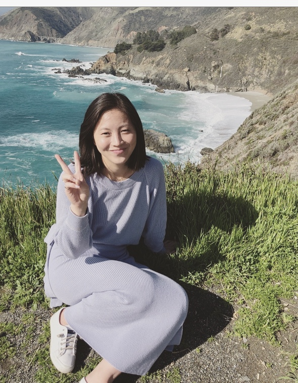
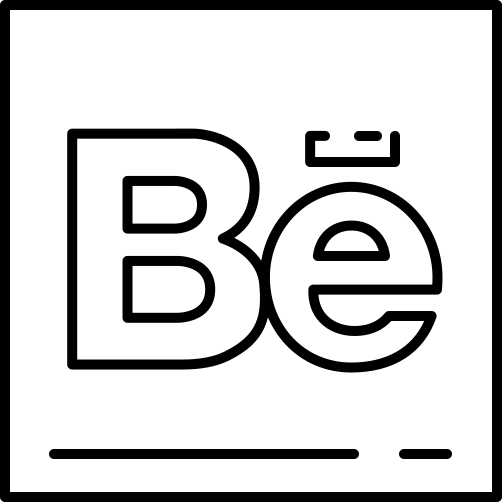

Works
UX.UI Designer
Hannah Sun-Ye Park

BIO
The first time I heard about user experience design was at a breast pump hackathon at MIT in 2018. I was intruiged by their problem solving skills, researched what they do, and wanted to get into the field.
Since then, I enrolled into a UX Design program at UCI and from that have created experiences in several projects focusing on interaction design, usability, and user research for desktop and mobile channels.
I thrive on working in a fast paced team environment. Looking to learn and gain more experience in the UX field with a mentor that will maximize the use of my assertive nature and earnest ambition to flourish. With that, guiding and mentoring me to become a leader that can direct and empower others in the future.
Orange County
California Native
hannahsunyepark@gmail.com
About Me